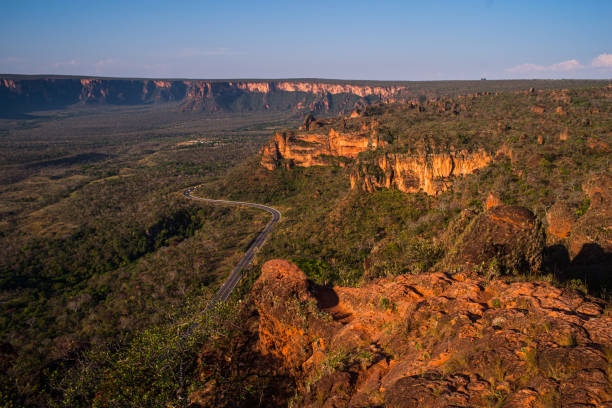
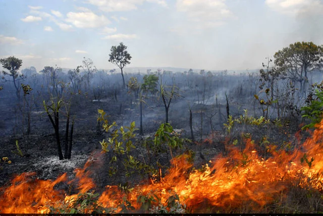

Flora resistente
Cascas grossas, raízes profundas e caules retorcidos ajudam as plantas a resistir ao fogo e à seca prolongada.
Início / O Cerrado
O BIOMAAntes de falar sobre o fogo e como preveni-lo, é preciso entender o que está em jogo: um bioma vasto, diverso e essencial para o equilíbrio ambiental do país.

O Cerrado é o segundo maior bioma do Brasil, atrás apenas da Amazônia, e cobre uma extensa área do território nacional, avançando por estados do Centro-Oeste, Sudeste, Nordeste e Norte, incluindo o Piauí.
É formado por um mosaico de fisionomias que vão de campos abertos a formações florestais mais densas, com árvores de troncos retorcidos, casca grossa e raízes profundas — características adaptadas a um clima com estação seca marcada e à presença histórica do fogo.
Entenda a relação do bioma com o fogo →Cada elemento do Cerrado carrega marcas de milhares de anos de convivência com secas prolongadas, solos ácidos e queimadas naturais.
Cascas grossas, raízes profundas e caules retorcidos ajudam as plantas a resistir ao fogo e à seca prolongada.
Abriga espécies como o lobo-guará, o tamanduá- bandeira e a ema, muitas delas ameaçadas pela perda de habitat.
O relevo do Cerrado dá origem a nascentes que alimentam algumas das principais bacias hidrográficas do Brasil.
Solos profundos e ácidos, com baixa fertilidade natural, moldaram uma vegetação própria e muito especializada.
Alguns dados ajudam a dimensionar a relevância do Cerrado — tanto ambiental quanto para a produção rural que também depende dele.
* Números aproximados, com base em referências públicas sobre o bioma. A equipe deve conferir e atualizar estes dados com as fontes utilizadas na pesquisa antes da publicação final — ver Fontes e referências .
O fogo sempre fez parte da história do Cerrado e, em ciclos naturais, ajuda a renovar a vegetação. O problema começa quando esse fogo deixa de ser controlado — seja por acidente, descuido ou práticas inadequadas de manejo.
Entender essa diferença entre o fogo que faz parte do bioma e o fogo livre que o ameaça é o ponto de partida do projeto Fogo Zero.
Entenda o problema do fogo livre →